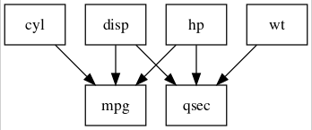

lavaanPlot: Saving and Embedding Plots
Alex Lishinski
2024-01-26
Save_and_embed.RmdFunctions for embedding plots in Rmarkdown pdfs and for saving plots as pngs
embed_plot_pdf() saves your plot as a pdf image and then
inserts that image into the pdf when you render Rmardown doc.
save_png() as the name suggests, saves your plot as a
png image in the local directory (or wherever you tell it to).
model <- 'mpg ~ cyl + disp + hp
qsec ~ disp + hp + wt'
fit <- sem(model, data = mtcars)
pl <- lavaanPlot(model = fit)
# Example for pdf embed
embed_plot_pdf(pl, "plot2.pdf", width = 500)
# Example for saving to .png
save_png(pl, "plot.png", width = 500)Now having saved the image, it can be embedded in the document with


saved plot